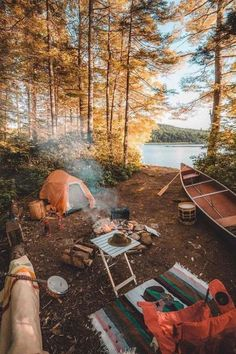
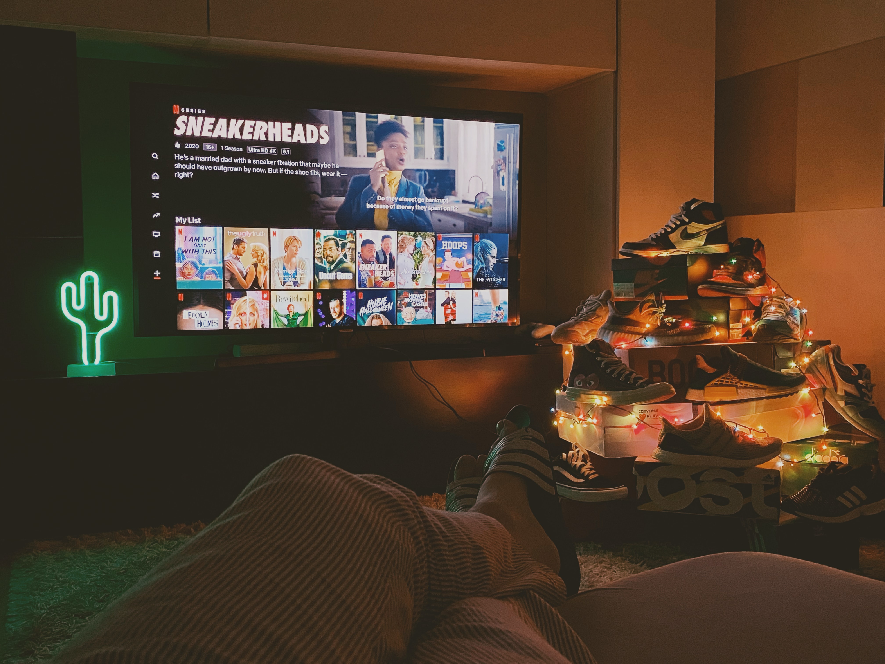

Hobbies
Hobbies play a multifaceted role in a person's life, encompassing numerous benefits and contributing to their overall well-being. Beyond providing a much-needed respite from daily routines, hobbies offer a sense of personal fulfillment and satisfaction as individuals delve into activities aligned with their interests and passions. They serve as platforms for skill development, intellectual stimulation, and personal growth, fostering creativity, expanding knowledge, and enhancing problem-solving abilities. Moreover, hobbies facilitate social connections and community engagement, enabling individuals to forge meaningful relationships with like-minded individuals. With their potential to promote work-life balance, physical fitness, and mental well-being, hobbies are invaluable in cultivating a holistic and fulfilling lifestyle that brings joy, self-discovery, and a sense of accomplishment.
WRITING
It provides an outlet for self-expression, nurtures creativity, and enhances communication skills. It allows me to explore my thoughts and emotions and articulate my ideas effectively. Writing serves as a means of reflection and self-discovery, fostering personal growth and providing a creative and therapeutic outlet for their inner world. Writing is a safe place for me to write whatever emotions I feel. It may be anger, sadness, joy, excitement, and many more.

Outdoor Activities
Engaging in outdoor activities with my family is a wonderful way for us to spend quality time together, bond, and create lasting memories. We enjoy activities such as hiking, picnics, and cycling, where we can immerse ourselves in nature, enjoy each other's company, and get some exercise. Camping trips are also a favorite, allowing us to experience the joys of outdoor living, roasting marshmallows, and engaging in various outdoor adventures. These outdoor experiences provide opportunities for me and my family to connect, have fun, and appreciate the beauty of the natural world while creating cherished moments together.

Watching Movies
Watching movies is a hobby that I enjoy as it provides entertainment, escapism, and a chance to relax. I appreciate the diverse stories, characters, and cinematic techniques that movies offer, allowing me to explore different worlds and perspectives. Whether I'm watching alone or with friends and family, movies create a shared experience and often evoke strong emotions that I can connect with. I most especially love watching movies when I'm with my honeybunchsugarplum. They inspire me, spark my creativity, and sometimes even make me consider pursuing a career in the film industry.
Listening to Music
Listening to music is a cherished hobby for me as a teenager. It brings me immense joy, serves as a source of inspiration, and allows me to connect with various emotions and experiences. Whether I'm exploring new genres, discovering new artists, or revisiting my favorite songs, music provides a soundtrack to my life. It helps me unwind, uplifts my mood, and offers a sense of solace during challenging times. Whether I'm singing along, dancing, or simply immersing myself in the melodies, music is a powerful form of self-expression and a way for me to connect with others who share similar musical tastes.